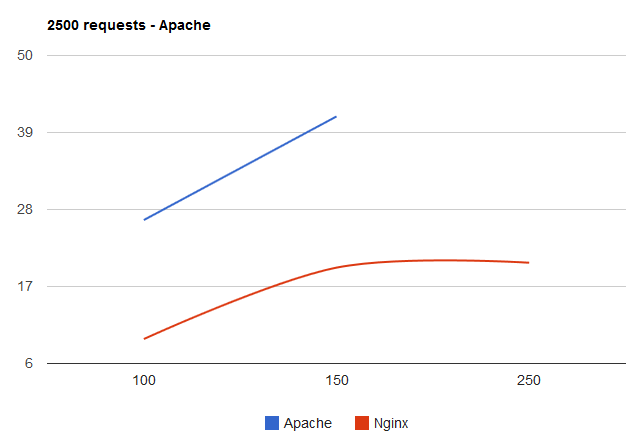
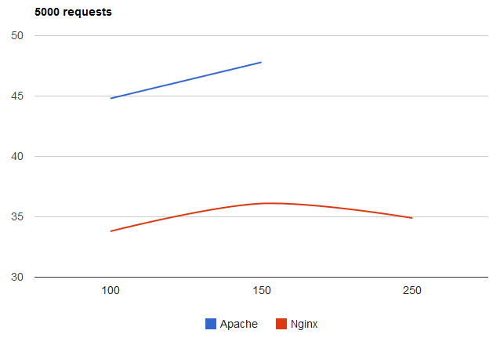
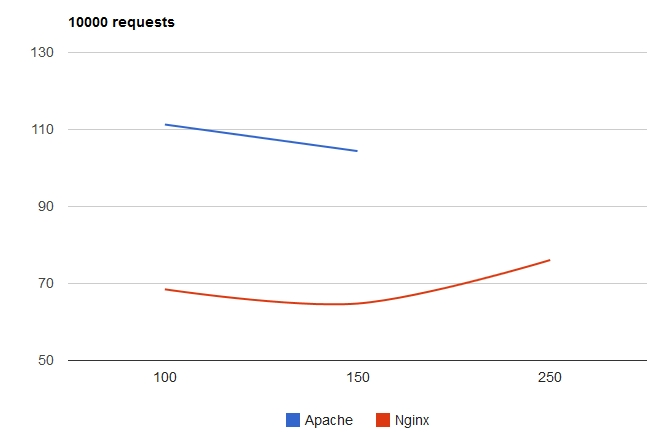

Managing Drupal with Nginx
Performance of an Nginx hybrid vs Apache
http://inmotionhosting.com/support/DrupalCon/2015
Scott Mitchell
About Me
Scott Mitchell
Working with the Web since 1997
InMotion Hosting since 2010
Customer Community Developer
Drupal since 2012
Agenda
- History of Apache
- History of Nginx
- Apache vs Nginx
- Test Setup
- Test Results
1995
- Dominant http server: NCSA httpd by Robert McCool
- Microsoft IIS - August 1995
- Apache - Early 1995
- 1.0 release date - December 1995
1995
| December |
| NCSA | 52% |
| Other | 36% |
| Apache | 5% |
| Sun | 5% |
| Microsoft | <1% |
Source: http://news.netcraft.com/archives/2015/02/24/february-2015-web-server-survey.html
1996
| June |
| Apache | 33% |
| NCSA | 22% |
| Sun | 16% |
| Other | 26% |
| Microsoft | 3% |
Source: http://news.netcraft.com/archives/2015/02/24/february-2015-web-server-survey.html
Recent History
2005 - peaked at approx 70% of market share
2015 - approx 39% - lowest since 1996
Nginx History
- Development started in 2002 by Igor Sysoev.
First release in 2004
Created to handle the "C10k" issue.
Fill the needs of high traffic sites like Rambler (500 million requests per day in 2008)
2007
| May |
| Apache | 56% |
| Microsoft | 32% |
| Other | 8% |
| Sun | 2% |
| Google | 2% |
| Nginx | <1% |
Source: http://news.netcraft.com/archives/2015/02/24/february-2015-web-server-survey.html
2015
| Feb |
| Apache | 39% |
| Microsoft | 29% |
| Other | 16% |
| Nginx | 15% |
| Google | 2% |
Source: http://news.netcraft.com/archives/2015/02/24/february-2015-web-server-survey.html
Sample sites running on Nginx
Connections
Apache
- mpm_worker: spawns processes
- Each process can handle multiple threads
- Each thread has single connection
Connections
Nginx
- Spawns workers
- Each worker handles thousands of connections
- Fast looping mechanism checks events
- Events are processed asynchronously
- Once handled, event is removed from the loop
Static & Dynamic content
Apache
- Static: handled by default
- Dynamic: embed processor into worker
instance (mod_suphp)
- Can swap modules as needed per requirements
Static & Dynamic content
Nginx
- Static: handled by default
- Dynamic: pass to external processor (FastCGI)
- Overhead only for static content
Configuration
Apache
- Distributed configuration via htaccess files
- Checks each component in the path for an .htaccess file
- URL rewrites/access restriction/authentication, etc
Configuration
Nginx
- No decentralized configuration
- Increase in performance
- Better security because only the admin can configure
Modules
Apache
- Dynamically enable/disable modules
Nginx
- Modules are compiled into core
Apache/Nginx Hybrid?
- Nginx in front as reverse proxy
- Handles client requests
- Speed serving static content
- Pass dynamic content to Apache
- Easy to install
- Easier configuration for Content Managment Systems
- No need to change hosting companies in most cases
The Test
- ApacheBench benchmarking tool
- Varying concurrent users (100, 150, 250)
- Varying requests (2500, 5000, 10000)
- Same physical VPS server (standard VPS with SSD 8GB RAM).
- Drupal 7 test site
NginxCP
http://www.nginxcp.com/
- FREE!
- DDOS Protection
- WHM Interface
- GZIP compression
- cPanel service monitor support
- PHP rewrite Compatible
- Can manage which domain use Nginx and which domain use Apache via SSH.
Installation
Super Easy!
cd /usr/local/src
wget http://nginxcp.com/latest/nginxadmin.tar
tar xf nginxadmin.tar
cd publicnginx
./nginxinstaller install
chmod a+x nginxcp.sh
./nginxcp.sh
Test 1 Results - Apache
| Requests | Users | Time |
| 2500 | 100 | 26.5 |
| 2500 | 150 | 41.3 |
| 2500 | 250 | dnf |
Test 1 Results - Nginx Hybrid
| Requests | Users | Time |
| 2500 | 100 | 9.5 |
| 2500 | 150 | 19.7 |
| 2500 | 250 | 20.4 |
Test 1 Chart - 2500 Requests

Test 2 Results - Apache
| Requests | Users | Time |
| 5000 | 100 | 44.8 |
| 5000 | 150 | 47.9 |
| 5000 | 250 | dnf |
Test 2 Results - Nginx Hybrid
| Requests | Users | Time |
| 5000 | 100 | 33.8 |
| 5000 | 150 | 36.1 |
| 5000 | 250 | 34.9 |
Test 2 Chart - 5000 Requests

Test 3 Results - Apache
| Requests | Users | Time |
| 10000 | 100 | 111.3 |
| 10000 | 150 | 104.4 |
| 10000 | 250 | dnf |
Test 3 Results - Nginx Hybrid
| Requests | Users | Time |
| 10000 | 100 | 68.5 |
| 10000 | 150 | 64.8 |
| 10000 | 250 | 76.1 |
Test 3 Chart - 10000 Requests

Results Summary
- 2500 Test - Hybrid twice as fast as Apache
- 5000 Test - Hybrid ~ 35% faster than Apache
- 10000 Test - Hybrid ~ 35 - 40% faster than Apache
- Hybrid able to process at all concurrent user levels vs Apache
What does this mean?
- Increase in overall performance
- Able to handle a higher level of traffic
- Easy to toggle on and off if desired
- No need to reconfigure Drupal to work
- May save time/money by increasing time before upgrading server